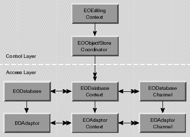

Inherits From:
NSObject
Conforms To: NSObject (NSObject)
Declared in: EOAccess/EODatabase.h
Each of an EODatabase's EODatabaseContexts forms a separate transaction scope, and is in effect a separate logical user to the server. An EODatabaseContext uses one or more pairs of EODatabaseChannel and EOAdaptorChannel objects to manage data operations (insert, update, delete, and fetch). Adaptors may support a limited number of contexts per database or channels per context, but an application is guaranteed at least one of each.
The EODatabase, EODatabaseContext, and EODatabaseChannel classes form the database level of the Enterprise Objects Framework. The database level is a client of the adaptor level, which is defined by the adaptor classes: EOAdaptor, EOAdaptorContext, and EOAdaptorChannel. Together, the database and adaptor levels make up the access layer of the Enterprise Objects Framework.
Figure 3 The Access Layer The database level acts as an intermediary between the adaptor level and the control layer, which includes an EOObjectStoreCoordinator and an EOEditingContext (Figure 4). The control layer operates in terms of enterprise objects, while the adaptor level operates in terms of database rows packaged as NSDictionaries. It's the job of the database level to perform the necessary object-to-relational translation between the two.
There's little need for your code to interact directly with an EODatabase. An EOEditingContext creates its own database level objects, which create their own corresponding adaptor level objects. Once the network of objects is in place, your code might interact with an EODatabase to access its corresponding EOAdaptor object, but additional programmatic interaction is usually unnecessary.

Figure 4 The Database Level as an Intermediary Between the Adaptor Level and the Control Layer
Snapshots
EODatabase's most significant responsibility is to record snapshots for its EODatabaseContexts. A snapshot is a dictionary whose keys are attribute names and whose values are the corresponding, last-known database values. Enterprise Objects Framework records snapshots as it successfully fetches, inserts and updates enterprise objects. Snapshot information is used when changes to enterprise objects are saved back out to the database to ensure that row data has not been changed by someone else since it was last recorded by the application.
A snapshot contains entries for a row's primary key, class properties, foreign keys for class property relationships, and attributes used for locking. They are recorded under the globalIDs of their enterprise objects. (GlobalIDs are based on an object's primary key and its associated entity; see the class specification for EOGlobalID for more information.)
EODatabase also records snapshots for to-many relationships. These snapshots consist of an NSDictionary of NSDictionaries, in which the top-level dictionary has as its key the globaID of the enterprise object for which to-many relationships are being recorded. The key's value is a dictionary whose keys are the names of the enterprise object's to-many relationships. Each of these keys in turn has as its value an array of globalIDs that identify the objects at the destination of the relationship.
The snapshots made by an EODatabase form the global view of data for nearly every other part of the application, representing the current view of data in the server as far as the application is concerned (though other applications may have made changes). This global view is temporarily overridden locally by EODatabaseContexts, which form their own snapshots as they make changes during a transaction. When an EODatabaseContext commits its top-level transaction, it reconciles all changed snapshots with the global view of the database object, so that other database contexts (except those with open transactions) immediately use the new snapshots as well. EODatabaseContexts automatically use their EODatabase to record snapshots, so there's no need for your application to intervene in an EODatabase's snapshotting mechanism.
For more information on snapshots and how they relate to an application's update strategy, see the EODatabaseContext class specification.
Result Cache
An EODatabase also performs the function of caching enterprise objects for entities that cache their objects (see the EOEntity class specification). An EODatabase's result cache stores the globalIDs of enterprise objects for entities that cache their objects. The first time you perform a fetch against such an entity, all of its objects are fetched, regardess of the fetch specification used. The globalIDs of the resulting objects are stored in the EODatabase's result cache by entity name. Whenever possible, subsequent fetches are performed against the cache (in memory) rather than against the database. With a globalID, Enterprise Objects Framework can look up the values for the corresponding object in its snapshot using EODatabase's or EODatabaseContext's snapshotForGlobalID: method.
As an example, suppose that you have an entity named Rating that contains all the valid ratings for Movies (G, PG, R, and so on). Rather than store a Movie's rating directly in the Movie as an attribute, Movie maintains a relationship to a Rating. To specify a rating for a movie, users select the rating from a pop-up list of the possible values. This Rating entity should cache its objects. The values that populate the rating pop-up list are only fetched once, and there's no need to fetch them again; the relationships between Movies and Ratings can be maintained without subsequent fetches.
The result cache is managed automatically; you shouldn't have to manipulate it explicitly. However, if you need to access or alter the cache, EODatabase provides several methods for interacting with it.
Returns the EOAdaptor used by the EODatabase for communication with the database server. Your application can interact directly with the EOAdaptor, but should avoid altering its state (for example, by starting a transaction with one of its adaptor contexts).
addModel:
- (void)addModel: (EOModel *)aModel
Adds aModel to the receiver's list of EOModels. This allows EODatabases to load entities and their properties only as they're needed, by dividing them among separate EOModels. aModel must use the same EOAdaptor as the receiver and use the same connection dictionary as the receiver's other EOModels.
See also: - addModelIfCompatible: , - models , - removeModel:
addModelIfCompatible:
- (BOOL)addModelIfCompatible: (EOModel *)aModel
Adds aModel to the receiver's list of EOModels, checking first to see whether it's compatible with those other EOModels. Returns YES if aModel is already in the list or if it's successfully added. Returns NO if aModel's adaptor name differs from that of the receivers or if the receiver's adaptor returns NO to a canServiceModel: message.
See also: - addModel: , - models , - removeModel:
entityForObject:
- (EOEntity *)entityForObject: (id)anObject
Returns the EOEntity mapped to anObject in the receiver's EOModels, or nil if there is no such EOEntity. This method works by sending entityForObject: messages to each of the receiver's EOModels and returning the first one found.
See also: - entityNamed:
entityNamed:
- (EOEntity *)entityNamed: (NSString *)entityName
Returns the EOEntity named entityName in the receiver's EOModels, or nil if there is no such EOEntity. This method works by sending entityNamed: messages to each of the receiver's EOModels and returning the first one found.
See also: - entityForObject:
forgetAllSnapshots
- (void)forgetAllSnapshots
Clears all of the receiver's snapshots and posts an EOObjectsChangedInStoreNotification (defined in EOObjectStore) describing the invalidated object. For a description of snapshots and their role in an application, see the class description.
See also: - forgetSnapshotForGlobalID: , - forgetSnapshotsForGlobalIDs: , - recordSnapshot:forGlobalID: , - recordSnapshots: , - recordSnapshot:forSourceGlobalID:relationshipName: , - recordToManySnapshots:
forgetSnapshotForGlobalID:
- (void)forgetSnapshotForGlobalID: (EOGlobalID *)globalID
Clears the snapshot made for the enterprise object identified by globalID and posts an EOObjectsChangedInStoreNotification (defined in EOObjectStore) describing the invalidated object. For a description of snapshots and their role in an application, see the class description.
See also: - forgetSnapshotsForGlobalIDs: , - forgetAllSnapshots , - recordSnapshot:forGlobalID:
forgetSnapshotsForGlobalIDs:
- (void)forgetSnapshotsForGlobalIDs: (NSArray *)globalIDs
Clears the snapshots made for the enterprise objects identified by each of the EOGlobalIDs in globalIDs and posts an EOObjectsChangedInStoreNotification (defined in EOObjectStore) describing the invalidated objects. For a description of snapshots and their role in an application, see the class description.
See also: - forgetSnapshotForGlobalID: , - forgetAllSnapshots , - recordSnapshots:
initWithAdaptor:
- initWithAdaptor: (EOAdaptor *)anAdaptor
The designated initializer, this method initializes a newly allocated EODatabase with anAdaptor as its adaptor and returns self .
Typically, you don't need to programmatically create EODatabase objects. Rather, they are created automatically by the control layer. See the class description for more information. If you do need to create an EODatabase programmatically, you should never associate more than one EODatabase with a given EOAdaptor. In general, use initWithModel: , which automatically selects the adaptor.
initWithModel:
- initWithModel: (EOModel *)aModel
Initializes a newly allocated EODatabase by creating an instance of EOAdaptor named in aModel and invoking initWithAdaptor: . Returns self . Typically, you don't need to programmatically create EODatabase objects. Rather, they are created automatically by the control layer. See the class description for more information.
See also: + adaptorWithModel: (EOAdaptor), - adaptorName (EOModel)
invalidateResultCache
- (void)invalidateResultCache
Invalidates the receiver's result cache. See the class description for more discussion of this topic.
See also: - invalidateResultCacheForEntityNamed: , - resultCacheForEntityNamed:
invalidateResultCacheForEntityNamed:
- (void)invalidateResultCacheForEntityNamed:(NSString *)entityName
Invalidates the result cache containing an array of globalIDs for the objects associated with the entity entityName. See the class description for more discussion of this topic.
See also: - invalidateResultCache , - resultCacheForEntityNamed:
Returns the receiver's EOModels.
See also: - initWithModel: , - addModel: , - addModelIfCompatible: , - removeModel:
recordSnapshot:forGlobalID:
- (void)recordSnapshot: (NSDictionary *)aSnapshot forGlobalID: (EOGlobalID *)globalID
Records aSnapshot under globalID. For a description of snapshots and their role in an application, see the class description.
See also: - globalIDForRow: (EOEntity), - recordSnapshots: , - forgetSnapshotForGlobalID:
recordSnapshot:forSourceGlobalID:relationshipName:
- (void)recordSnapshot:(NSArray *)globalIDs forSourceGlobalID:(EOGlobalID *)globalID relationshipName:(NSString *)name
For the object identified by globalID, records an NSArray of globalIDs for the to-many relationship named name. These globalIDs identify the objects at the destination of the relationship. For a description of snapshots and their role in an application, see the class description.
See also: - recordSnapshot:forGlobalID: , - recordSnapshots: , - recordSnapshot:forGlobalID: , - snapshotForSourceGlobalID:relationshipName:
recordSnapshots:
- (void)recordSnapshots: (NSDictionary *)snapshots
Records the snapshots in snapshots. snapshots is a dictionary whose keys are EOGlobalIDs and whose values are the snapshots for those global IDs.
See also: - recordSnapshot:forGlobalID: , - forgetSnapshotsForGlobalIDs:
recordToManySnapshots:
- (void)recordToManySnapshots:(NSDictionary *)snapshots
Records the objects in snapshots. snapshots should be an NSDictionary of NSDictionaries, in which the top-level dictionary has as its key the globaID of the enterprise object for which to-many relationships are being recorded. The key's value is a dictionary whose keys are the names of the enterprise object's to-many relationships. Each of these keys in turn has as its value an array of globalIDs that identify the objects at the destination of the relationship. For a description of snapshots and their role in an application, see the class description.
See also: - recordSnapshot:forSourceGlobalID:relationshipName: , - recordSnapshot:forGlobalID: , - snapshotForSourceGlobalID:relationshipName:
registerContext:
- (void)registerContext: (EODatabaseContext *)aContext
Records aContext as one of the receiver's EODatabaseContexts, without retaining it. aContext must have been created with the receiver using EODatabaseContext's initWithDatabase: method, which invokes this method automatically. You should never need to invoke this method directly.
See also: - unregisterContext: , - registeredContexts
registeredContexts
- (NSArray *)registeredContexts
Returns all EODatabaseContexts that have been registered with the receiver, generally all the database contexts that were created with the receiver using EODatabaseContext's initWithDatabase: method.
See also: - registerContext: , - unregisterContext:
removeModel:
- (void)removeModel: (EOModel *)aModel
Removes aModel from the receiver's list of EOModels. Raises an exception if aModel isn't one of the receiver's models.
See also: - addModel: , - addModelIfCompatible: , - models
resultCacheForEntityNamed:
- (NSArray *)resultCacheForEntityNamed:(NSString *)entityName
Returns an array containing the globalIDs of the objects associated with entityName. See the class description for more discussion of this topic.
See also: - invalidateResultCache , - invalidateResultCacheForEntityNamed:
setResultCache:forEntityNamed:
- (void)setResultCache:(NSArray *)cache forEntityNamed:(NSString *)entityName
Updates the receiver's cache for entityName with cache, an array of globalIDs for all the enterprise objects associated with the EOEntity named entityName. This method is invoked automatically, and you should never need to invoke it directly. For more information on this topic, see the class description.
See also: - invalidateResultCache , - invalidateResultCacheForEntityNamed: , - resultCacheForEntityNamed:
snapshotForGlobalID:
- (NSDictionary *)snapshotForGlobalID: (EOGlobalID *)globalID
Returns the snapshot associated with globalID if there is one; otherwise returns nil . For a description of snapshots and their role in an application, see the class description.
See also: - recordSnapshot:forGlobalID: , - forgetSnapshotForGlobalID:
snapshotForSourceGlobalID:relationshipName:
- (NSArray *)snapshotForSourceGlobalID:(EOGlobalID *)globalID relationshipName:(NSString *)name
Returns a snapshot that consists of an array of globalIDs. These globalIDs identify the objects at the destination of the to-many relationship named name, which is a property of the object identified by globalID. If there is no snapshot, returns nil. For a description of snapshots and their role in an application, see the class description.
See also: - recordSnapshot:forSourceGlobalID:relationshipName: , - recordToManySnapshots:
snapshots
- (NSDictionary *)snapshots
Returns all of the receiver's snapshots, stored in an NSDictionary under their EOGlobalIDs.
unregisterContext:
- (void)unregisterContext: (EODatabaseContext *)aContext
Removes aContext as one of the receiver's EODatabaseContexts, without releasing it. EODatabaseContext automatically invokes this method when deallocated; you should never need to invoke it directly.
See also: - registerContext: , - registeredContexts
Copyright © 1997, Apple Computer, Inc. All rights reserved.